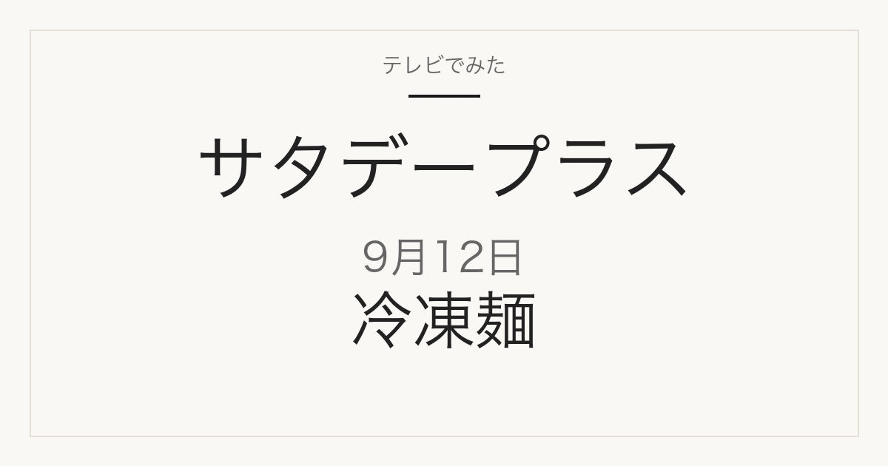

01
対象は冷凍麺
TBSの放送回ページは「ラーメン＆担々麺＆ソーキそば…『冷凍麺』ランキング」と案内しています。何品を試すかは公表されていません。
テレビ紹介商品の記録メディア
この記事には広告・アフィリエイトリンクが含まれる場合があります。
2026年9月12日（土）放送
ラーメン・担々麺・ソーキそばが対象／No.1の人が5行で解説
放送中です。画面で確認できた商品と順位から、このページに追記しています。予告動画に映っていた8商品の候補も下に残しています。
放送で確認できた商品を見る
放送で確認できた商品
放送中・順位を順次確認中
2026年9月12日の放送中に、画面で商品名・順位・価格を確認できたものです。確認できた情報から追記しています。


順位・番組掲載価格・商品名は放送画面で確認。内容量・JAN・商品番号は各メーカー公式商品ページ（2026年9月12日確認）と照合しています。番組掲載価格は放送時点の番組調べです。楽天市場のリンクがあるのは、放送で示された販売単位と一致する商品のみで、価格・在庫・販売単位は番組掲載時点と異なる場合があります。日清本麺と無印良品の担々麺は楽天市場で同一商品の販売ページを確認できていないため、メーカー公式へのリンクのみです。リンガーハットの野菜たっぷりちゃんぽんは、楽天市場で確認できたのが6食セットで放送の単品とは販売単位が異なるため、こちらもメーカー公式へのリンクのみとしています。
視聴者投票
審査の順位とは別
これは視聴者投票の結果で、番組の採点による順位とは別のものです。「食べてみたい冷凍麺」として得票率が発表されました。
2026年9月12日の放送画面（画面時計8:26）で確認しました。番組はラーメン・担々麺・ちゃんぽんなど11商品からベスト5を発表する形式です。
公式X予告動画に映った商品
順位は未発表
番組公式X（@saturdayplus）の9月12日放送予告動画に、パッケージが映っていた冷凍麺です。放送前にまとめた候補で、ここに挙げた商品が番組で取り上げられたかどうかは、画面で確認できたものだけを上の「放送で確認できた商品」に移しています。並び順は動画に映った順で、ランキングの順位ではありません。
商品名は番組公式Xの予告動画のパッケージ表示を根拠とし、メーカー・ブランド公式の商品ページで名称を照合しています。動画の静止画は掲載していません。価格と購入リンクは、放送で紹介される商品と販売商品の一致を確認できてから追加します。
ひたすら試してランキング
この回のテーマは、ひたすら試してランキング｜冷凍麺です。MBS公式の次回予告は「ひたすら試してランキング 冷凍ラーメン」と案内し、TBSの放送回ページは対象をラーメン・担々麺・ソーキそばと記載しています。個別の商品名・メーカー・順位は、MBSとTBSの番組公式の予告には書かれていません。公式Xの予告動画に映っていた商品は上の候補一覧にまとめています。
01
TBSの放送回ページは「ラーメン＆担々麺＆ソーキそば…『冷凍麺』ランキング」と案内しています。何品を試すかは公表されていません。
02
MBS公式に「No.1の人に5行にまとめてもらいました」とあります。1位の商品名は放送で発表されます。
03
この企画は毎回、複数の評価項目で採点して総合順位を決める形です。今回の項目は公表されていません。
04
MBS公式の次回予告に、大西風雅さん、小杉竜一さん（ブラックマヨネーズ）、水野美紀さんの名前が挙がっています。
上の内容は、MBS公式の次回予告欄とTBSの2026年9月12日放送回ページ（いずれも2026年9月11日確認）に記載されているものです。番組内容は変更になる場合があります。
同じ回の他の企画
9月12日の放送後、このページに次の情報が加わります。ブックマークしておけば、同じURLのまま最新の内容を見られます。
掲載するのは、番組公式かメーカー・販売元の公式情報で確認できたものだけです。
過去の放送回の記事です。
MBS「サタデープラス」番組公式（次回予告欄）
サタデープラス公式X 9月12日放送の予告動画（2026年9月10日18時投稿）
当サイトは番組公式サイトではありません。放送内容は変更になる場合があります。